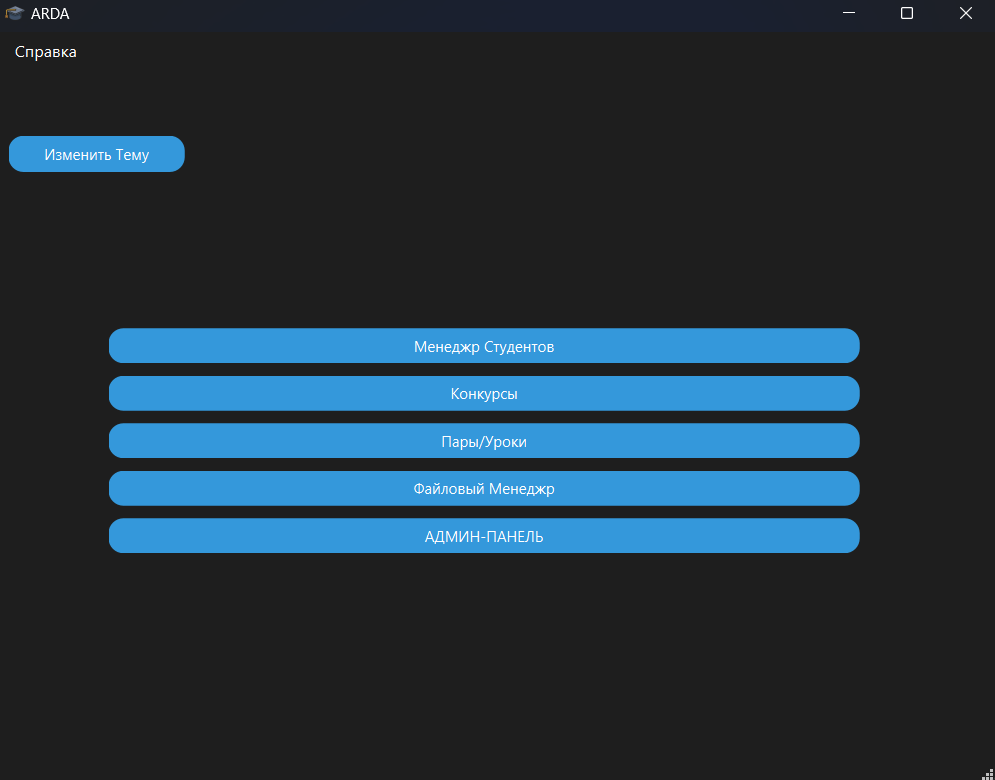
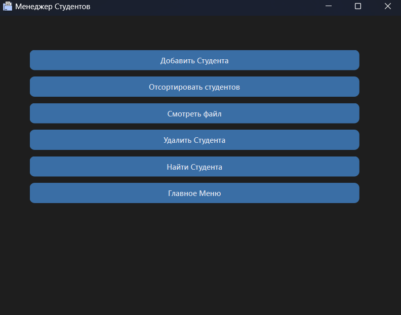
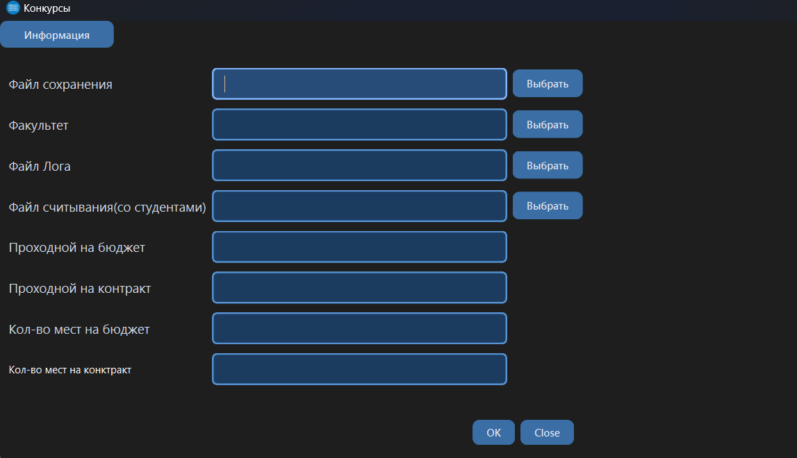
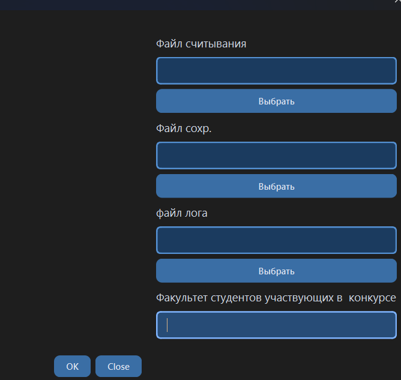
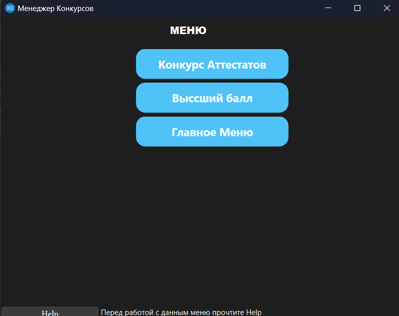
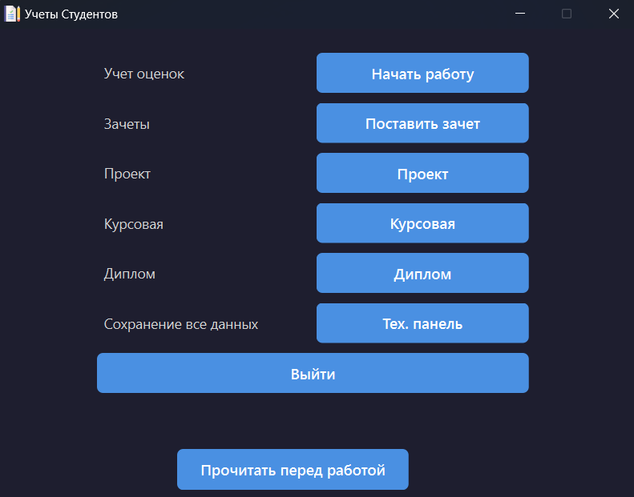
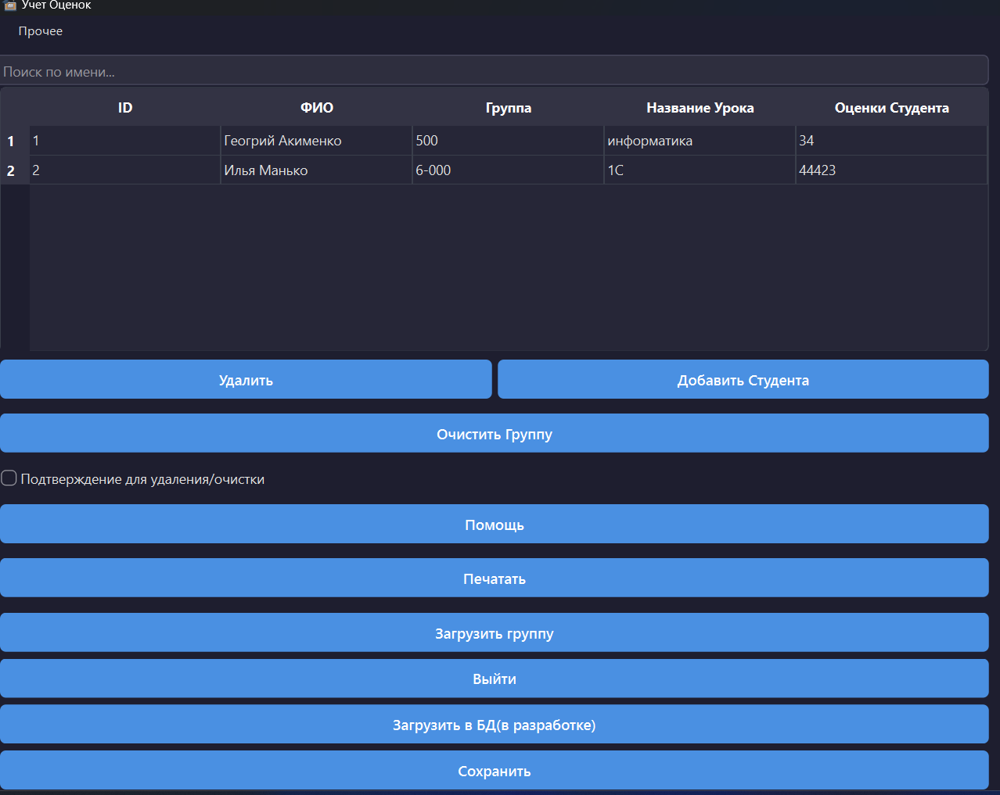

ARDA Student Manager
ARDA Student Manager — это комплексная платформа для учёта студентов, предназначенная для школ, колледжей и университетов...
Функционал
- 📋 Умный учёт студентов: создание, редактирование, удаление, поиск и сортировка данных в реальном времени.
- 🏆 Конкурсы и олимпиады: контроль за результатами экзаменов и аттестаций, статистика, аналитика и рейтинги участников.
- 📚 Учёт успеваемости: ведение оценок, курсовых, дипломных проектов и проектной деятельности с возможностью экспорта в PDF.
- 💾 Экспорт/импорт: работа с файлами в формате JSON для совместимости и резервного копирования данных.
- 🖥️ Сохранение в реестр Windows: безопасное хранение критически важных данных.
- 📂 Файловый менеджер: управление директориями и файлами прямо в приложении.
- 🔐 Админ-панель: настройка прав доступа, контроль действий пользователей и настройка функционала под конкретное учреждение.
Обзор







Скачать приложение
Новая версия: 2.2 — дата выхода: 13.00.2025
Скачать 2.2 напрямуюТекущая версия: 1.9 Beta
Скачать 1.9 Beta напрямуюРезервная ссылка: GitHub
README
ARDA Student Manager — интеллектуальная система для учёта студентов... Позволяет вести учёт локально или сетевым способом, сортировать записи, управлять конкурсами и аттестациями, вести учёт оценок, курсовых и дипломных работ, работать с файлами и экспортировать данные в PDF и JSON.
История версий
1.0 — Первая версия: полный набор функций для учёта студентов, работа с оценками, конкурсы, экспорт в JSON и PDF.
FAQ
Q: Подходит для школ?
A: Да.
Q: На каких ОС работает?
A: Windows (планируется поддержка других).
Q: Можно ли использовать дистанционно?
A: Да, через сетевой режим.
Контакты
GitHub: ARDA Student Manager
Автор: Gerakl1123